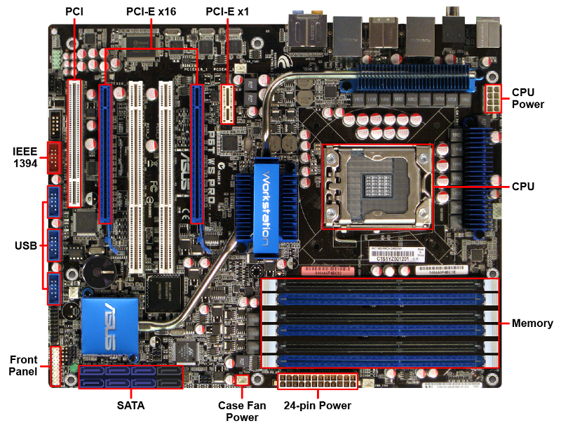

A motherboard is a main circuit board that connects and controls all parts of a computer.
Motherboard Specs When picking a motherboard, keep these things in mind:
- CPU socket type
- Memory compatibility
- Number of memory slots
- Maximum memory support
- Expansion slots (for adding cards)
- Onboard devices (like video, audio, or network)
Typical Components Here are common parts found on a motherboard:
- CPU Socket: This holds the CPU. Different CPU types need different socket types, so make sure the socket fits your CPU. Some motherboards support multiple CPUs, often used in servers.
- Memory Slots: Most motherboards have multiple slots to add memory. Always check the motherboard manual to know which types of memory work with your motherboard.
- PCI Slots: These are used for adding expansion cards like graphics cards. Types include PCI, PCI-X, PCIe, and AGP. m
- Integrated Components: Many motherboards have built-in components like network cards, audio, and video cards. These are cheaper but may not be as good as separate expansion cards.
- I/O Connectors: These are ports on the back of the motherboard for connecting devices like USB, keyboard, mouse, audio, and Ethernet. The I/O shield helps protect them from dust.
- Internal Connectors: These connect parts inside the computer, like fans and power. The motherboard also connects to the front panel of the case (USB, audio, etc.) and uses a 20- or 24-pin connector for power.
- Firmware: The firmware is software stored on the motherboard. Older motherboards used BIOS, while newer ones use UEFI.
- CMOS Battery: This battery keeps the date and time even when the computer is off.
- Chipset: This helps the CPU, memory, and other parts communicate. Intel uses the Platform Controller Hub (PCH), and AMD uses the Fusion Controller Hub (FCH).
- Manual: The motherboard manual is helpful for checking specifications and compatibility when upgrading or changing parts.
Always check the motherboard’s manual to make sure it fits your needs, and make sure it’s compatible with your case and power supply.
